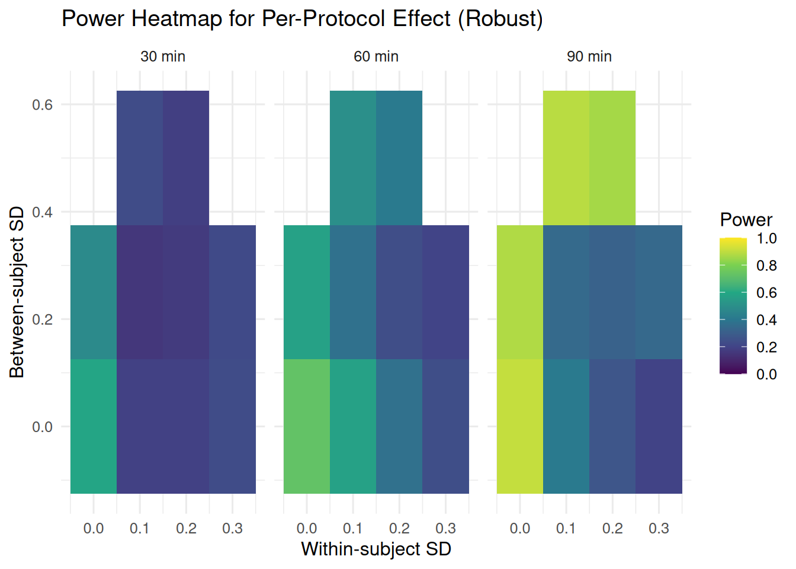
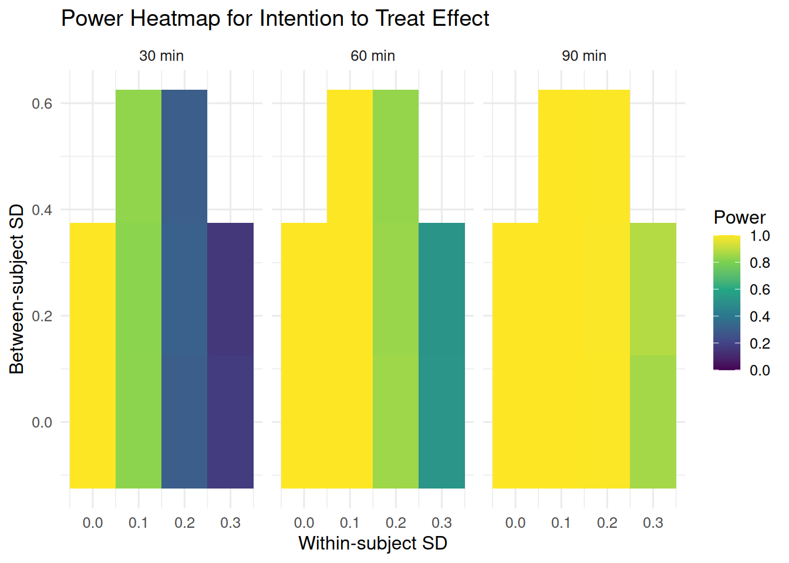

3Simulation-based Power Analysis for Two-arm RCT with Compositional Outcomes
Author
Tamas
Published
June 5, 2025
3.1 Introduction
This document demonstrates a simulation-based power analysis for a two-arm parallel randomized controlled trial (RCT) with compositional outcomes. The simulation models 24-hour time use data consisting of three components: sleep, sedentary time, and physical activity, which sum to 1440 minutes (24 hours). The analysis includes visualization of power curves and effect sizes to help determine optimal sample sizes and assess the sensitivity of the study design to different parameters.
3.2 Required Packages
Code
# Install required packages if not already installedreq <-c("tidyverse", "lme4", "compositions", "ggtern", "progress", "phyloseq", "patchwork", "lmerTest", "foreach", "doSNOW", "doParallel")need <- req[!req %in%installed.packages()[, "Package"]]if (length(need)) install.packages(need)# Install Bioconductor packages if neededif (!requireNamespace("BiocManager", quietly =TRUE)) install.packages("BiocManager")bioc_pkgs <-c("phyloseq", "microbiome", "ComplexHeatmap")bioc_need <- bioc_pkgs[!bioc_pkgs %in%installed.packages()[, "Package"]]if (length(bioc_need)) BiocManager::install(bioc_need, update =FALSE)# Install microViz from R Universe only if not already installedif (!"microViz"%in%installed.packages()[, "Package"]) {install.packages("microViz",repos =c(davidbarnett ="https://david-barnett.r-universe.dev", getOption("repos")) )}# Install suggested packages for enhanced microViz functionalitysuggested <-c("ggtext", "ggraph", "DT", "corncob")need_suggested <- suggested[!suggested %in%installed.packages()[, "Package"]]if (length(need_suggested)) install.packages(need_suggested)# Load all required packagesinvisible(lapply(c(req, "microViz"), library, character.only =TRUE))
3.3 Helper Functions
These functions convert between compositional data and isometric log-ratio (ilr) coordinates.
# Power estimation using SimEngine – cleaned version (no play_sd_prop, no corr_noise_sd)# Install SimEngine if not already installedif (!requireNamespace("SimEngine", quietly =TRUE)) {install.packages("SimEngine")}# Load required packageslibrary(SimEngine)library(lme4)library(lmerTest)library(compositions)library(MASS)library(dplyr)# --------------------------------------------------------------------------------# Command line argument parsing ---------------------------------------------------# --------------------------------------------------------------------------------# Parse command line arguments for flexible parameter adjustmentargs <-commandArgs(trailingOnly =TRUE)# Default valuesdefault_sims <-10default_cores <-16# Parse arguments: --sims=VALUE --cores=VALUEsims_param <- default_simscores_param <- default_coresif (length(args) >0) {for (arg in args) {if (grepl("^--sims=", arg)) { sims_param <-as.numeric(sub("^--sims=", "", arg))if (is.na(sims_param) || sims_param <=0) {warning("Invalid sims parameter, using default: ", default_sims) sims_param <- default_sims } } elseif (grepl("^--cores=", arg)) { cores_param <-as.numeric(sub("^--cores=", "", arg))if (is.na(cores_param) || cores_param <=0) {warning("Invalid cores parameter, using default: ", default_cores) cores_param <- default_cores } } }}# Log the parameters being usedmessage("=== SIMULATION PARAMETERS ===")message("Number of simulations: ", sims_param)message("Number of cores: ", cores_param)message("==============================")# --------------------------------------------------------------------------------# Main simulation wrapper ---------------------------------------------------------# --------------------------------------------------------------------------------est_power_simengine <-function(n_pg =50,effect_min_values =c(30),s_between_values =c(0.15),s_within_values =c(0.25),baseline_days =7,intervention_days =14,sims =500,cores =4) { start_time <-Sys.time()message("Setting up SimEngine simulation …")# Create simulation object sim <-new_sim()# ------------------------------------------------------------------------------# LEVELS (note: no play_sd_prop, no corr_noise_sd) ------------------------------# ------------------------------------------------------------------------------ sim %<>%set_levels(n_pg = n_pg,effect_min = effect_min_values,s_between = s_between_values,s_within = s_within_values,baseline_days = baseline_days,intervention_days= intervention_days )# ------------------------------------------------------------------------------# Helper transformations (INSIDE function for parallel access) ------------------# ------------------------------------------------------------------------------ comp_to_ilr <-function(x_min) {stopifnot(is.matrix(x_min), ncol(x_min) ==3) bad_row <-!is.finite(rowSums(x_min)) |rowSums(x_min) <=0if (any(bad_row)) { x_min[bad_row, ] <-matrix(rep(c(600, 480, 360), each =sum(bad_row)), ncol =3, byrow =TRUE) } x_min[x_min <=0|!is.finite(x_min)] <-1e-6 compositions::ilr(sweep(x_min, 1, rowSums(x_min), "/")) } ilr_to_minutes <-function(ilr_mat, total =1440) {stopifnot(is.matrix(ilr_mat), ncol(ilr_mat) ==2) comp_obj <- compositions::ilrInv(ilr_mat) prop <-as.matrix(as.data.frame(comp_obj)) bad <-apply(prop, 1, function(r) any(!is.finite(r) | r <=0) ||!is.finite(sum(r)) ||abs(sum(r) -1) >1e-8)if (any(bad)) prop[bad, ] <-1/3round(prop * total, 1) }# ------------------------------------------------------------------------------# Data‑generating function ------------------------------------------------------# ------------------------------------------------------------------------------ generate_data <-function(n_pg, effect_min, baseline_days, intervention_days, s_between, s_within, seed =NULL) {if (!is.null(seed)) set.seed(seed) N <- n_pg *2 grp <-rep(0:1, each = n_pg) # 0 = Control, 1 = Intervention# Mean daily compositions: (sedentary, sleep, physical) base_comp <-c(600, 480, 360) active_comp <-c(600- effect_min, 480, 360+ effect_min)# Person‑level random effects in ILR space b_ilr <- MASS::mvrnorm(N, mu =c(0, 0), Sigma =diag(s_between^2, 2))# Person-specific playtime proportion of sedentary time (10-40%) personal_play_prop <-sapply(1:N, function(i) { p <-rbeta(1, 2, 5) *0.3+0.1# right-skew between 0.1-0.4return(p) })# Containers all_ids <- all_periods <- all_days <-NULL all_ilr <-matrix(, 0, 2) all_sedentary <-numeric() # Store actual sedentary minutesfor (i inseq_len(N)) {for (period inc("baseline", "intervention")) { ndays <-if (period =="baseline") baseline_days else intervention_days comp_mu <-if (period =="baseline"|| grp[i] ==0) base_comp else active_comp comp_ilr <-comp_to_ilr(matrix(rep(comp_mu, ndays), ncol =3, byrow =TRUE)) comp_ilr <-sweep(comp_ilr, 2, b_ilr[i, ], "+") # add person RE day_ilr <- comp_ilr + MASS::mvrnorm(ndays, mu =c(0, 0),Sigma =diag(s_within^2, 2))# Index bookkeeping all_ids <-c(all_ids, rep(i, ndays)) all_periods <-c(all_periods, rep(period, ndays)) all_days <-c(all_days,if (period =="baseline") seq_len(baseline_days)else baseline_days +seq_len(intervention_days)) all_ilr <-rbind(all_ilr, day_ilr)# Store sedentary minutes for this person-period (will be calculated after ILR transformation)# We'll calculate playtime after we have the actual sedentary minutes } }# Back‑transform ILR → minutes and calculate playtime based on actual sedentary behavior mins <-ilr_to_minutes(all_ilr)colnames(mins) <-c("sedentary", "sleep", "physical")# Now generate playtime based on actual sedentary minutes playmin <-numeric(length(all_ids))for (i inseq_along(all_ids)) { person_id <- all_ids[i] period <- all_periods[i] actual_sedentary <- mins[i, "sedentary"]# Base playtime as proportion of actual sedentary time base_playtime <- personal_play_prop[person_id] * actual_sedentary# Add small amount of day-to-day noise (2% of base playtime) daily_sd <-0.02* base_playtime noisy_playtime <-rnorm(1, base_playtime, daily_sd)# Apply intervention effect for intervention group during intervention periodif (period =="intervention"&& grp[person_id] ==1) {# Reduce playtime by effect_min, but ensure it doesn't go below 0# The reduction is additive (in minutes) to maintain the intended effect size intervention_playtime <-pmax(0, noisy_playtime - effect_min) playmin[i] <- intervention_playtime } else {# Control group or baseline period: just use the playtime based on actual sedentary playmin[i] <-pmax(0, noisy_playtime) # Ensure non-negative } }# Assemble data frame dat <-data.frame(id =factor(all_ids),group =factor(grp[all_ids], labels =c("Control", "Abstinence")),period =factor(all_periods, levels =c("baseline", "intervention")),day = all_days,sedentary = mins[, 1],sleep = mins[, 2],physical = mins[, 3],playtime = playmin ) dat <- dat %>%group_by(id) %>%mutate(base_play_mean =mean(playtime[period =="baseline"]),playtime_reduction = base_play_mean - playtime,intervention_active =as.integer(group =="Abstinence"& period =="intervention") ) %>%ungroup()return(dat) }# ------------------------------------------------------------------------------# Analysis function -------------------------------------------------------------# ------------------------------------------------------------------------------ run_analysis <-function(data) { data_ilr <- data comp_matrix <-as.matrix(data[, c("sedentary", "sleep", "physical")]) ilr_coords <-comp_to_ilr(comp_matrix) data_ilr$ilr1 <- ilr_coords[, 1] results <-list()## Between‑group effect during intervention ---------------------------------- md <-subset(data_ilr, period =="intervention") mb <-try(lmer(ilr1 ~ group + (1| id), data = md), silent =TRUE) results$p_between <-if (!inherits(mb, "try-error")) anova(mb)["group", "Pr(>F)"] elseNA## Within‑group effects ------------------------------------------------------- mc <-try(lmer(ilr1 ~ period + (1| id), data =subset(data_ilr, group =="Control")), silent =TRUE) results$p_control <-if (!inherits(mc, "try-error")) anova(mc)["period", "Pr(>F)"] elseNA mi <-try(lmer(ilr1 ~ period + (1| id), data =subset(data_ilr, group =="Abstinence")), silent =TRUE) results$p_intervention <-if (!inherits(mi, "try-error")) anova(mi)["period", "Pr(>F)"] elseNA## Interaction ---------------------------------------------------------------- mx <-try(lmer(ilr1 ~ group * period + (1| id), data = data_ilr), silent =TRUE) results$p_interaction <-if (!inherits(mx, "try-error")) anova(mx)["group:period", "Pr(>F)"] elseNA## Per‑protocol contrast ------------------------------------------------------ mp <-try(lmer(ilr1 ~ intervention_active * playtime_reduction + (1| id), data = data_ilr), silent =TRUE) results$p_protocol <-if (!inherits(mp, "try-error")) anova(mp)["intervention_active:playtime_reduction", "Pr(>F)"] elseNAreturn(results) }# ------------------------------------------------------------------------------# Simulation script ------------------------------------------------------------# ------------------------------------------------------------------------------ sim %<>%set_script(function() {set.seed(sample.int(1e7, 1))# Access simulation level variables correctly data <-generate_data(n_pg = L$n_pg,effect_min = L$effect_min,baseline_days = L$baseline_days,intervention_days= L$intervention_days,s_between = L$s_between,s_within = L$s_within )# Run analysis and ensure proper error handling result <-tryCatch({run_analysis(data) }, error =function(e) {# Return NA values with proper names if analysis failslist(p_between =NA_real_, p_control =NA_real_, p_intervention =NA_real_,p_interaction =NA_real_, p_protocol =NA_real_ ) })# Ensure result is a proper list with all required elementsif (!is.list(result)) { result <-list(p_between =NA_real_, p_control =NA_real_, p_intervention =NA_real_,p_interaction =NA_real_, p_protocol =NA_real_ ) }# Ensure all required columns exist required_names <-c("p_between", "p_control", "p_intervention", "p_interaction", "p_protocol")for (name in required_names) {if (!(name %in%names(result))) { result[[name]] <-NA_real_ } }return(result) })# ------------------------------------------------------------------------------# Config & run -----------------------------------------------------------------# ------------------------------------------------------------------------------ sim %<>%set_config(num_sim = sims,parallel =TRUE, # Enable parallel processingn_cores = cores, # Use specified corespackages =c("lme4", "lmerTest", "compositions", "MASS", "dplyr"),progress_bar =TRUE )# # Add a test run to debug issues# message("Testing data generation and analysis functions...")# tryCatch({# test_data <- generate_data(# n_pg = 10, # Small test# effect_min = 30,# baseline_days = 7,# intervention_days = 14,# s_between = 0.15,# s_within = 0.25# )# message("✓ Data generation successful")# message("Test data dimensions: ", nrow(test_data), " x ", ncol(test_data))# test_results <- run_analysis(test_data)# message("✓ Analysis function successful")# message("Test results: ", paste(names(test_results), test_results, sep="=", collapse=", "))# }, error = function(e) {# message("❌ Test failed with error: ", e$message)# stop("Stopping due to test failure. Fix the issue before running full simulation.")# })# message("Running simulations …") sim %<>%run()# ------------------------------------------------------------------------------# Summarise power --------------------------------------------------------------# ------------------------------------------------------------------------------ results <- sim$results# Add debugging informationmessage("Debug: Checking simulation results...")message("Results object class: ", class(results))message("Results is null: ", is.null(results))if (!is.null(results)) {message("Results dimensions: ", nrow(results), " x ", ncol(results))message("Results column names: ", paste(names(results), collapse =", ")) }# Add error handling for when all simulations failif (is.null(results) || (is.data.frame(results) &&nrow(results) ==0)) {stop("All simulations failed. Check your simulation parameters and functions.") }# Check if required columns exist before processing required_cols <-c("p_between", "p_control", "p_intervention", "p_interaction", "p_protocol") missing_cols <-setdiff(required_cols, names(results))if (length(missing_cols) >0) {stop(paste("Missing columns in results:", paste(missing_cols, collapse =", "))) }for (col in required_cols) { results[[col]] <-as.numeric(as.character(results[[col]])) } power_df <-aggregate(cbind(power_between = results$p_between <0.05,power_control = results$p_control <0.05,power_intervention= results$p_intervention<0.05,power_interaction = results$p_interaction <0.05,power_protocol = results$p_protocol <0.05,valid_between =!is.na(results$p_between),valid_control =!is.na(results$p_control), valid_intervention=!is.na(results$p_intervention),valid_interaction =!is.na(results$p_interaction),valid_protocol =!is.na(results$p_protocol) ),by =list(n_pg = results$n_pg,effect_min = results$effect_min,s_between = results$s_between,s_within = results$s_within,baseline_days = results$baseline_days,intervention_days= results$intervention_days ),FUN = mean, na.rm =TRUE ) end_time <-Sys.time()message(sprintf("Total elapsed time: %.2f mins", as.numeric(difftime(end_time, start_time, units ="mins"))))list(power_summary = power_df, sim_object = sim)}# --------------------------------------------------------------------------------# Example call -------------------------------------------------------------------# --------------------------------------------------------------------------------result <-est_power_simengine(n_pg =50, # Multiple sample sizeseffect_min_values =c(30, 60, 90, 120), s_between_values =seq(0.1, 0.3, by =0.05),s_within_values =seq(0.15, 0.35, by =0.05),baseline_days =7,intervention_days =14,sims = sims_param, cores = cores_param )# result <- est_power_simengine(# n_pg = c(50), # Multiple sample sizes# effect_min_values = c(30, 60, 90, 120), # s_between_values = seq(0.1, 0.3, by = 0.05),# s_within_values = seq(0.15, 0.35, by = 0.05),# baseline_days = 7,# intervention_days = 14,# sims = sims_param, # cores = cores_param # )# print(result$power_summary)# Save results with descriptive name and timestamptimestamp <-format(Sys.time(), "%Y%m%d_%H%M%S")filename <-paste0("scripts/sim_comp_debug/power_sim_results_", timestamp, ".RData")save(result, file = filename)# Print power summary# print(result$power_summary)# Print save locationmessage("Results saved to: ", filename)# POWER SUMMARY ANALYSISmessage("\n" , paste(rep("=", 60), collapse=""))message("POWER SUMMARY - TOP PERFORMING SETTINGS")message(paste(rep("=", 60), collapse=""))power_data <- result$power_summary# Summary for power_interactionmessage("\n🎯 INTERACTION EFFECT POWER SUMMARY:")message("-----------------------------------")# Find maximum power for interactionmax_interaction_power <-max(power_data$power_interaction, na.rm =TRUE)best_interaction <- power_data[which.max(power_data$power_interaction), ]message(sprintf("Maximum Interaction Power: %.3f", max_interaction_power))message("Best settings:")message(sprintf(" • Sample size per group (n_pg): %d", best_interaction$n_pg))message(sprintf(" • Effect size (effect_min): %d minutes", best_interaction$effect_min))message(sprintf(" • Between-subject SD (s_between): %.3f", best_interaction$s_between))message(sprintf(" • Within-subject SD (s_within): %.3f", best_interaction$s_within))# Show top 3 settings for interactionmessage("\nTop 3 settings for interaction power:")top_interaction <- power_data[order(power_data$power_interaction, decreasing =TRUE)[1:min(3, nrow(power_data))], ]for(i in1:nrow(top_interaction)) { row <- top_interaction[i, ]message(sprintf("%d. Power=%.3f | n_pg=%d | effect=%d | s_between=%.3f | s_within=%.3f", i, row$power_interaction, row$n_pg, row$effect_min, row$s_between, row$s_within))}# Summary for power_protocol message("\n🎯 PROTOCOL EFFECT POWER SUMMARY:")message("--------------------------------")# Find maximum power for protocolmax_protocol_power <-max(power_data$power_protocol, na.rm =TRUE)best_protocol <- power_data[which.max(power_data$power_protocol), ]message(sprintf("Maximum Protocol Power: %.3f", max_protocol_power))message("Best settings:")message(sprintf(" • Sample size per group (n_pg): %d", best_protocol$n_pg))message(sprintf(" • Effect size (effect_min): %d minutes", best_protocol$effect_min))message(sprintf(" • Between-subject SD (s_between): %.3f", best_protocol$s_between))message(sprintf(" • Within-subject SD (s_within): %.3f", best_protocol$s_within))# Show top 3 settings for protocolmessage("\nTop 3 settings for protocol power:")top_protocol <- power_data[order(power_data$power_protocol, decreasing =TRUE)[1:min(3, nrow(power_data))], ]for(i in1:nrow(top_protocol)) { row <- top_protocol[i, ]message(sprintf("%d. Power=%.3f | n_pg=%d | effect=%d | s_between=%.3f | s_within=%.3f", i, row$power_protocol, row$n_pg, row$effect_min, row$s_between, row$s_within))}# Overall summary statisticsmessage("\n📊 OVERALL POWER STATISTICS:")message("---------------------------")message(sprintf("Interaction Power - Mean: %.3f, Range: %.3f - %.3f", mean(power_data$power_interaction, na.rm =TRUE),min(power_data$power_interaction, na.rm =TRUE),max(power_data$power_interaction, na.rm =TRUE)))message(sprintf("Protocol Power - Mean: %.3f, Range: %.3f - %.3f", mean(power_data$power_protocol, na.rm =TRUE),min(power_data$power_protocol, na.rm =TRUE),max(power_data$power_protocol, na.rm =TRUE)))# DATA QUALITY ANALYSISmessage("\n" , paste(rep("=", 60), collapse=""))message("DATA QUALITY ANALYSIS - VALIDITY RATES")message(paste(rep("=", 60), collapse=""))# Check validity rates for each contrastvalidity_threshold <-0.95total_rows <-nrow(power_data)# Function to analyze validity for each contrastanalyze_validity <-function(valid_col, contrast_name) { high_validity_count <-sum(power_data[[valid_col]] > validity_threshold, na.rm =TRUE) perfect_validity_count <-sum(power_data[[valid_col]] ==1.0, na.rm =TRUE) mean_validity <-mean(power_data[[valid_col]], na.rm =TRUE) min_validity <-min(power_data[[valid_col]], na.rm =TRUE)message(sprintf("\n🔍 %s VALIDITY:", toupper(contrast_name)))message(sprintf(" • Rows with validity > %.2f: %d/%d (%.1f%%)", validity_threshold, high_validity_count, total_rows, 100* high_validity_count / total_rows))message(sprintf(" • Rows with perfect validity (1.0): %d/%d (%.1f%%)", perfect_validity_count, total_rows, 100* perfect_validity_count / total_rows))message(sprintf(" • Mean validity: %.3f", mean_validity))message(sprintf(" • Minimum validity: %.3f", min_validity))# Identify problematic parameter combinations if anyif (high_validity_count < total_rows) { low_validity_rows <- power_data[power_data[[valid_col]] <= validity_threshold, ]message(sprintf(" ⚠️ %d rows with validity ≤ %.2f:", nrow(low_validity_rows), validity_threshold))for(i in1:min(3, nrow(low_validity_rows))) { # Show up to 3 examples row <- low_validity_rows[i, ]message(sprintf(" Example %d: validity=%.3f | n_pg=%d | effect=%d | s_between=%.3f | s_within=%.3f", i, row[[valid_col]], row$n_pg, row$effect_min, row$s_between, row$s_within)) }if (nrow(low_validity_rows) >3) {message(sprintf(" ... and %d more problematic combinations", nrow(low_validity_rows) -3)) } } else {message(" ✅ All parameter combinations produced high-quality results!") }return(list(high_validity_count = high_validity_count,perfect_validity_count = perfect_validity_count,mean_validity = mean_validity,min_validity = min_validity ))}# Analyze each contrast typecontrasts <-list("valid_between"="Between-Group","valid_control"="Control Within-Group", "valid_intervention"="Intervention Within-Group","valid_interaction"="Group × Period Interaction","valid_protocol"="Per-Protocol")validity_summary <-list()for(col innames(contrasts)) { validity_summary[[col]] <-analyze_validity(col, contrasts[[col]])}# Overall validity summarymessage("\n📋 OVERALL VALIDITY SUMMARY:")message("---------------------------")all_high_validity <-sapply(validity_summary, function(x) x$high_validity_count)all_perfect_validity <-sapply(validity_summary, function(x) x$perfect_validity_count)all_mean_validity <-sapply(validity_summary, function(x) x$mean_validity)message(sprintf("Contrast with highest reliability: %s (%d/%d rows > %.2f)", contrasts[[which.max(all_high_validity)]], max(all_high_validity), total_rows, validity_threshold))message(sprintf("Contrast with lowest reliability: %s (%d/%d rows > %.2f)", contrasts[[which.min(all_high_validity)]], min(all_high_validity), total_rows, validity_threshold))# Check if all contrasts are highly reliableif(all(all_high_validity == total_rows)) {message("✅ EXCELLENT: All contrasts have high validity (>95%) across all parameter combinations!")} else { problematic_contrasts <-names(contrasts)[all_high_validity < total_rows]message(sprintf("⚠️ WARNING: %d contrast(s) have some parameter combinations with low validity:", length(problematic_contrasts)))for(contrast in problematic_contrasts) {message(sprintf(" • %s: %d/%d rows with validity ≤ %.2f", contrasts[[contrast]], total_rows - all_high_validity[[contrast]], total_rows, validity_threshold)) }}message("\n" , paste(rep("=", 60), collapse=""))
3.5 Simulate study
Code
# Source the generate_data function (assuming it's in the sim_engine_demo.R file)generate_data <-function(n_pg, effect_min, baseline_days, intervention_days, s_between, s_within, seed =NULL) {if (!is.null(seed)) set.seed(seed) N <- n_pg *2 grp <-rep(0:1, each = n_pg) # 0 = Control, 1 = Intervention# Mean daily compositions: (sedentary, sleep, physical) base_comp <-c(600, 480, 360) active_comp <-c(600- effect_min, 480, 360+ effect_min)# Person‑level random effects in ILR space b_ilr <- MASS::mvrnorm(N, mu =c(0, 0), Sigma =diag(s_between^2, 2))# Person-specific playtime proportion of sedentary time (10-40%) personal_play_prop <-sapply(1:N, function(i) { p <-rbeta(1, 2, 5) *0.3+0.1# right-skew between 0.1-0.4return(p) })# Containers all_ids <- all_periods <- all_days <-NULL all_ilr <-matrix(, 0, 2) all_sedentary <-numeric() # Store actual sedentary minutesfor (i inseq_len(N)) {for (period inc("baseline", "intervention")) { ndays <-if (period =="baseline") baseline_days else intervention_days comp_mu <-if (period =="baseline"|| grp[i] ==0) base_comp else active_comp comp_ilr <-comp_to_ilr(matrix(rep(comp_mu, ndays), ncol =3, byrow =TRUE)) comp_ilr <-sweep(comp_ilr, 2, b_ilr[i, ], "+") # add person RE day_ilr <- comp_ilr + MASS::mvrnorm(ndays, mu =c(0, 0),Sigma =diag(s_within^2, 2))# Index bookkeeping all_ids <-c(all_ids, rep(i, ndays)) all_periods <-c(all_periods, rep(period, ndays)) all_days <-c(all_days,if (period =="baseline") seq_len(baseline_days)else baseline_days +seq_len(intervention_days)) all_ilr <-rbind(all_ilr, day_ilr)# Store sedentary minutes for this person-period (will be calculated after ILR transformation)# We'll calculate playtime after we have the actual sedentary minutes } }# Back‑transform ILR → minutes and calculate playtime based on actual sedentary behavior mins <-ilr_to_minutes(all_ilr)colnames(mins) <-c("sedentary", "sleep", "physical")# Now generate playtime based on actual sedentary minutes playmin <-numeric(length(all_ids))for (i inseq_along(all_ids)) { person_id <- all_ids[i] period <- all_periods[i] actual_sedentary <- mins[i, "sedentary"]# Base playtime as proportion of actual sedentary time base_playtime <- personal_play_prop[person_id] * actual_sedentary# Add small amount of day-to-day noise (2% of base playtime) daily_sd <-0.02* base_playtime noisy_playtime <-rnorm(1, base_playtime, daily_sd)# Apply intervention effect for intervention group during intervention periodif (period =="intervention"&& grp[person_id] ==1) {# Reduce playtime by effect_min, but ensure it doesn't go below 0# The reduction is additive (in minutes) to maintain the intended effect size intervention_playtime <-pmax(0, noisy_playtime - effect_min) playmin[i] <- intervention_playtime } else {# Control group or baseline period: just use the playtime based on actual sedentary playmin[i] <-pmax(0, noisy_playtime) # Ensure non-negative } }# Assemble data frame dat <-data.frame(id =factor(all_ids),group =factor(grp[all_ids], labels =c("Control", "Abstinence")),period =factor(all_periods, levels =c("baseline", "intervention")),day = all_days,sedentary = mins[, 1],sleep = mins[, 2],physical = mins[, 3],playtime = playmin ) dat <- dat %>%group_by(id) %>%mutate(base_play_mean =mean(playtime[period =="baseline"]),playtime_reduction = base_play_mean - playtime,intervention_active =as.integer(group =="Abstinence"& period =="intervention") ) %>%ungroup()return(dat)}# Generate sample data with moderate effect sizeset.seed(123)sample_data <-generate_data(n_pg =50, # 50 participants per groupeffect_min =60, baseline_days =7, # 7 days baselineintervention_days =14, # 14 days interventions_between =0.3, # moderate between-subject variabilitys_within =0.2, # moderate within-subject variabilityseed =123)# Check the structure of the generated dataglimpse(sample_data)
Summary Statistics for Daily Playtime by Group and Period
Group
Period
N
Mean
SD
Median
Q25
Q75
Control
baseline
50
106.1
36.0
104.4
80.4
120.8
Control
intervention
50
106.3
37.5
99.0
78.0
121.4
Abstinence
baseline
50
118.0
48.9
107.7
80.1
134.1
Abstinence
intervention
50
10.2
25.1
0.0
0.0
5.1
4 Power analysis
Code
# Load the results from the SimEngine power analysisload("scripts/sim_comp_debug/power_sim_results_20250604_180839.RData")# Get the power summary data framepower_results_multi <- result$power_summary# Filter rows where all columns starting with "valid" have values >= 0.95valid_cols <-grep("^valid", names(power_results_multi), value =TRUE)power_results_multi <- power_results_multi %>%filter(if_all(all_of(valid_cols), ~ .x >=0.95))# Add a factor for effect size for better plottingpower_results_multi$effect_min_factor <-factor( power_results_multi$effect_min,levels =unique(power_results_multi$effect_min),labels =paste0(unique(power_results_multi$effect_min), " min"))# Convert from wide to long format to plot all power metricspower_results_long <- power_results_multi %>%pivot_longer(cols =starts_with("power_"),names_to ="power_type",values_to ="power" ) %>%mutate(power_type =factor( power_type,levels =c("power_between", "power_control", "power_intervention", "power_interaction", "power_protocol"),labels =c("Between-Group Effect", "Within-Control Effect", "Within-Intervention Effect", "Intention to Treat Effect", "Per-Protocol Effect") ) )# Create a faceted plot showing all power curvesggplot(power_results_long, aes(x = s_between, y = power, color = effect_min_factor,group =interaction(effect_min_factor, s_within))) +geom_line(aes(alpha =factor(s_within))) +geom_point(aes(alpha =factor(s_within))) +facet_wrap(~ power_type, ncol =2) +labs(title ="Power Curves by Effect Size and Variability Parameters",subtitle ="Comparing different types of effects",x ="Between-subject SD", y ="Statistical Power",color ="Effect Size",alpha ="Within-subject SD") +theme_minimal() +geom_hline(yintercept =0.8, linetype ="dashed", color ="red") +scale_y_continuous(limits =c(0, 1), breaks =seq(0, 1, 0.2)) +theme(legend.position ="bottom")
Code
# Create a condensed comparison plotggplot(power_results_long, aes(x = effect_min, y = power, color = power_type,linetype = power_type)) +geom_smooth(se =FALSE) +labs(title ="Comparison of Power by Effect Type",x ="Effect Size (minutes)", y ="Statistical Power",color ="Effect Type",linetype ="Effect Type") +theme_minimal() +geom_hline(yintercept =0.8, linetype ="dashed", color ="black") +scale_y_continuous(limits =c(0, 1), breaks =seq(0, 1, 0.2))
Code
power_protocol_heatmap <- power_results_multi %>%ggplot(aes(x = s_between, y = s_within, fill = power_protocol)) +geom_tile() +facet_wrap(~ effect_min_factor) +scale_fill_viridis_c(limits =c(0, 1), breaks =seq(0, 1, 0.2)) +labs(title ="Power Heatmap for Protocol Effect",x ="Between-subject SD",y ="Within-subject SD",fill ="Power") +theme_minimal() +theme(legend.position ="right")# Display the heatmappower_protocol_heatmap

Code
# Create a heatmap visualization showing power for different parameter combinations# Focus on the interaction effect as it's typically the primary outcomepower_interaction_heatmap <- power_results_multi %>%ggplot(aes(x = s_between, y = s_within, fill = power_interaction)) +geom_tile() +facet_wrap(~ effect_min_factor) +scale_fill_viridis_c(limits =c(0, 1), breaks =seq(0, 1, 0.2)) +labs(title ="Power Heatmap for Intention to Treat Effect",x ="Between-subject SD",y ="Within-subject SD",fill ="Power") +theme_minimal() +theme(legend.position ="right")# Display the heatmappower_interaction_heatmap

Code
# Create a table summarizing the minimum effect size needed for 80% power# under different variability conditionspower_threshold <-0.8power_summary_table <- power_results_multi %>%group_by(s_between, s_within) %>%summarize(min_effect_for_interaction =min(effect_min[power_interaction >= power_threshold], na.rm =TRUE),min_effect_for_protocol =min(effect_min[power_protocol >= power_threshold], na.rm =TRUE),.groups ="drop" )# Display the summary tablelibrary(DT)datatable( power_summary_table,colnames =c("Between-subject SD", "Within-subject SD", "Min Effect for 80% Int to Treat Power (min)", "Min Effect for 80% Protocol Power (min)" ),caption ="Minimum effect size needed for 80% power under different variability conditions",options =list(pageLength =10,autoWidth =TRUE,searching =TRUE,ordering =TRUE ))